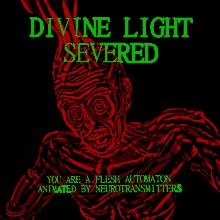
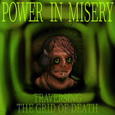
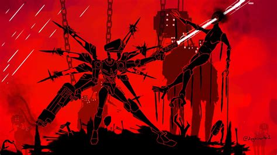

This is the most sh*t-post masterpiece game ever. It somehow has both the most nonsense story ever yet the most poetic one too with humanity being shown in its most depraved form. Gameplay's pretty cool; I just wish that it didn't put people off too much with its artstyle to where they just don't play it anymore.
(Please watch Max0r's video it's an acid adventure)
No, These images are not AI generated.


Best gameplay-wise game I've played with some of the rawest things you can possibly do. Shooting bullets off of coins to hit guys, deflecting a lightning bolt with coins, Parrying a massive zombie with a simple punch, all that. Has some really cool characters and story too; too bad it isn't finished yet, but still has enough meat in it to warrant its high praise (No, I do not have the robot bodypillow).

Don't wanna spoil too much, but this is for sure the most emotional duo of games I've played. Deltarune is still only like 1/2 done, so a few years are left to wait for that. Still, pretty good stuff for someone who had to work in some guy's basement while making the best game OST I've heard (Actually on second thought it's a close tie between this and ULTRAKILL's OST).